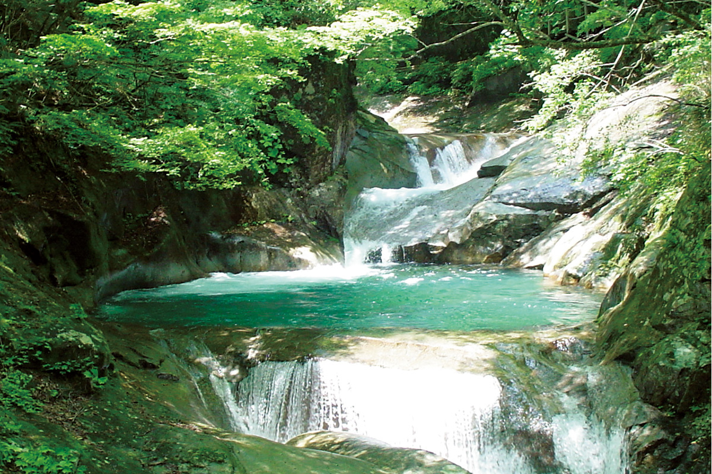
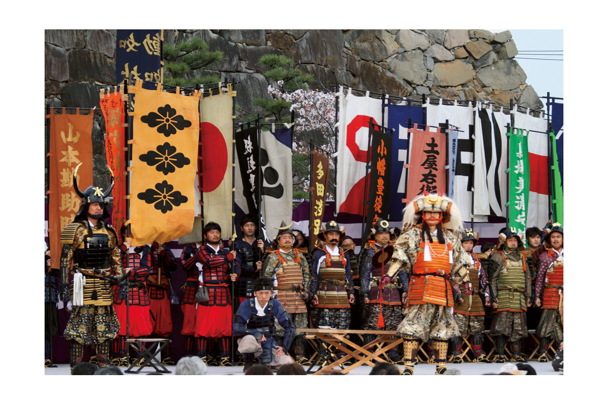
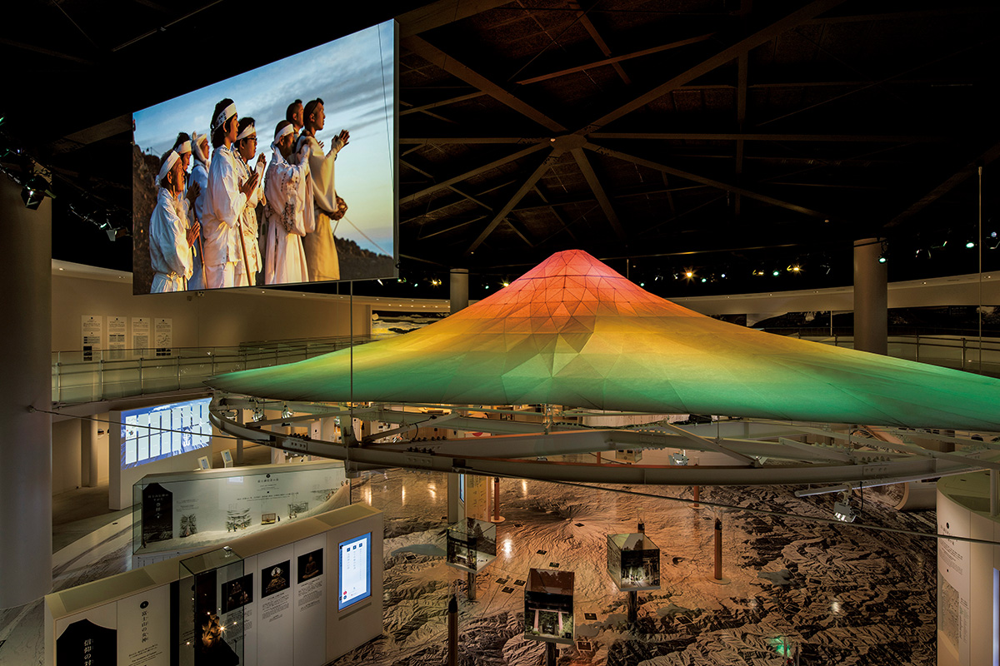
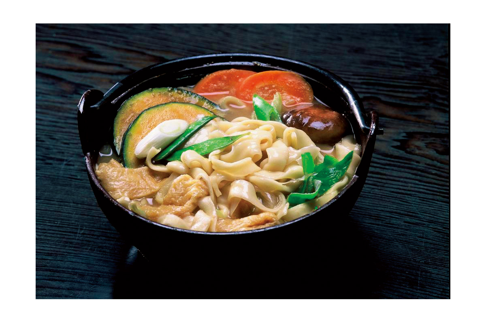
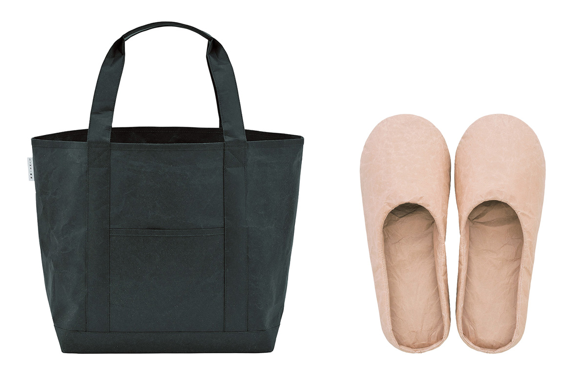
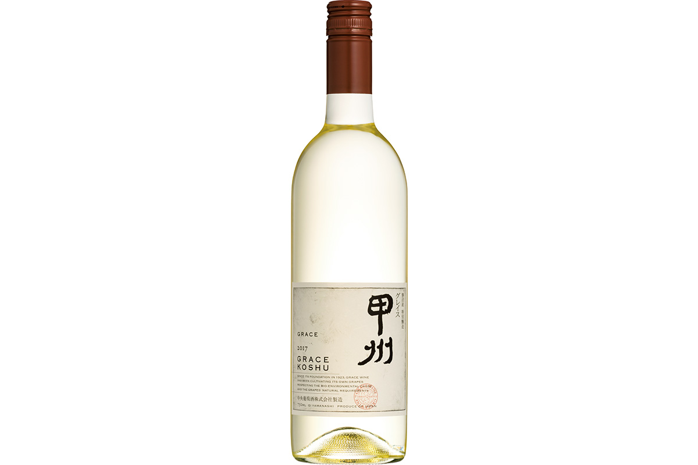
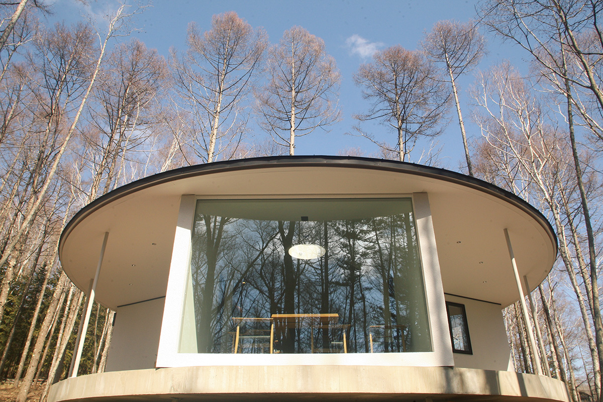

Префектура Яманаси
Яманаси: виноградники у Фудзи, хото и ночь в самом старом онсэне

Река перетекает через каменные ступени в изумрудную заводь, вокруг густой зелёный лес.
Край винограда и вина, где восемь десятых земли занято лесами, а над долинами стоит Фудзи. Рассказываем, за чем ехать в Яманаси и почему здесь объявили себя винной префектурой.
О префектуре
Винная префектура у подножия Фудзи
Прежде эти земли звали областью Кай, и состояла она из четырёх уездов: Яманаси, Ясиро, Кома и Цуру. С конца эпохи Хэйан здесь держался род Кай-Гэндзи, ветвь рода Минамото, а в XVI веке поднялся род Такэда: он воевал как один из сильнейших домов эпохи и метил объединить страну.
В 1582 году Такэда Кацуёри (1546–1582), сын полководца Такэды Сингэна (1521–1573), проиграл союзу Оды Нобунаги (1534–1582) и Токугавы Иэясу (1543–1616), и род Такэда исчез. В 1724 году земли перешли под прямое управление сёгуната, в эпоху Мэйдзи стали сначала областью Кай, потом префектурой Кофу, а затем получили имя Яманаси.
Почти восемь десятых территории занимают леса, и это по праву горная префектура. Здесь собирают больше всего в стране винограда, персиков и сливы, а виноградники признали частью наследия Японии. По выпуску вина и по числу виноделен край первый в стране, поэтому здесь и объявили себя винной префектурой. Из воды здешних гор делают и сакэ, и минеральную воду, а по объёму её выпуска префектура тоже первая.
Что посмотреть
Ущелье с изумрудной водой
Ущелье Нисидзава
Отсюда открывается один из лучших видов на ущелье во всей стране, и для прогулки проложена удобная тропа. Сейчас открыт только маршрут до трёхъярусного водопада и обратно, и на него уходит около четырёх часов.
- Справки
- ассоциация туризма города Яманаси
- Телефон
- +81 553-22-1111
Что ещё посмотреть
- Ущелье Сёсэндзё, скалы и вода между камнями
- Храм Минобу-сан Кудон-дзи, старый храм на склоне
- Мост Сарухаси, деревянный мост без опор
Праздники
Пятнадцать сотен воинов на площади
Праздник Сингэн-ко
Праздник посвящён памяти Такэды Сингэна: на площадь у парка Майдзуру собираются около тысячи пятисот человек в доспехах и повторяют выход войска к Каванадзаве. За это зрелище событие попало в книгу рекордов как самое большое собрание самураев.

- Период
- ежегодно в начале апреля
- Место
- центр города Кофу, Яманаси
Другие праздники
- Огненный праздник Ёсида, осенние огни у подножия Фудзи
- Фейерверки Симмэй, летний залп над рекой
- Большой праздник Дзидзо, зимний обряд у святилища
Музеи и архитектура
Дом, объясняющий Фудзи
Центр всемирного наследия Фудзи префектуры Яманаси
Это выставочный зал о природе, истории и культуре Фудзи. У северного и южного корпусов разные задачи: в одном рассказывают о самой горе и её вулканической жизни, в другом о том, как Фудзи вошла в искусство и веру людей.

- Адрес
- 6663-1 Funatsu, Fujikawaguchiko, Minamitsuru, Yamanashi
- Телефон
- +81 555-72-0259
- Сайт
- fujisan-whc.jp
Что ещё посмотреть
- Художественный музей префектуры, живопись и графика у воды
- Литературный музей, книги писателей края
- Центр наблюдения за линейным поездом, поезда на магнитной подушке
Местная кухня
Суп с широкой лапшой
Хото
Это главное блюдо края: широкую плоскую лапшу долго варят в густом супе с мисо, добавляя тыкву, грибы и овощи. По преданию, такую похлёбку готовили в лагере Такэды Сингэна, и именно она дала начало всей местной кухне.

Что ещё попробовать
- Удон Ёсида, плотная лапша с капустой и мисо
- Тушёные куриные потроха, сладко-солёная закуска к сакэ
- Сэйда-но-тамадзи, картофельные шарики под соусом
Где поесть
Три звезды переехали в горы
Яцугатакэ Эсаки
Шеф Синтаро Эсаки, чей токийский ресторан держал три звезды гида Мишлен, в 2018 году переехал к подножию гор Яцугатакэ. Теперь он готовит из того, что дают поля и леса вокруг, и меню собирается по сезону.
- Адрес
- 5771-210 Yato, Oizumi-cho, Hokuto, Yamanashi
- Телефон
- +81 551-45-8707
- Часы
- с 12:00 до 13:30 и с 18:00 до 20:30 по последнему заказу
- Выходные
- среда и четверг
Ремёсла
Сумки из бумаги
SIWA
Этот бренд основала местная бумажная мастерская, где бумагу делают уже тысячу лет. Местные мастера сшивают листы специальным способом, поэтому сумки, кошельки и домашние тапочки получаются прочными и при этом почти невесомыми.

- Справки
- магазин SIWA Collection в Tokyu Plaza в Гиндзе
- Телефон
- +81 3-6264-5344
- Сайт
- siwa.jp
Что привезти
Вино из винограда косю
Вино «Грэйс Косю»
Винодельня открылась в 1923 году в Кацунуме и до сих пор принадлежит одной семье. Здесь делают ставку на собственный виноград, а вино из сорта косю считают точкой отсчёта для всей местной школы: сорт растёт в этих долинах давно и даёт сухое вино с ясной кислотностью.

- Справки
- винодельня Тюо Будосю
- Телефон
- +81 553-44-1230
- Сайт
- grace-wine.com
Где остановиться
Самый старый постоялый двор
Онсэн Нисияма, «Кэйункан»
Дом собрал в себе черты японской архитектуры: деревянные галереи, раздвижные стены и вид на ущелье. Он занесён в книгу рекордов как самое старое в мире место, где принимают гостей, а горячая вода идёт сюда из источника без подогрева.
- Адрес
- Nishiyama-onsen, Hayakawa-cho, Minamikoma, Yamanashi
- Телефон
- +81 556-48-2111
- Комнат
- 35
- Цена
- от 20 000 иен за стандартный номер в японском стиле с двумя приёмами пищи, налоги не включены, банный сбор отдельно
- Сайт
- keiunkan.co.jp
Norm. fuji у озера Кавагути
Это маленький отель на берегу озера Кавагути, куда пускают только одну группу гостей в день, поэтому весь дом остаётся в распоряжении приехавших.

- Сайт
- norm-fuji.com
Местный диалект
Как здесь говорят «очень вкусно»
- фунтони умээ караочень вкусно
- нимоцу га оокутэ эрайра, ватаси га моцу дзянтяжело с вещами, я понесу
- варуй дзян нэизвини, неудобно вышло
- ий са ёохорошо, ладно
Рекорды
В чём Яманаси первая
- №1 производство минеральной воды: первое место в стране
- №1 производство галстуков: первое место
- №1 годовое число солнечных часов: первое место
Вопросы и ответы
Что ещё спрашивают о Яманаси
Какой из трёх знаменитых мостов Японии попал на гравюру Утагавы Хиросигэ?
Мост Сарухаси в городе Оцуки через реку Кацура. Он построен без единой опоры: с двух берегов навстречу друг другу выведены четыре яруса наклонных балок, и на них лежит настил. Утагава Хиросигэ (1797–1858), мастер гравюры укиё-э, изобразил его на гравюре «Вид на Сарухаси в Кае».
Какую рыбу вывели, скрестив королевского лосося с радужной форелью?
«Фудзи-но-сукэ». В префектуре на хорошей воде развито рыбоводство, и здешние хозяйства первыми в стране провели такое скрещивание. Рыбу, которая взяла лучшее от обоих видов, начали отгружать в октябре 2019 года.
Справочник
Яманаси в цифрах
Общие сведения
| Административный центр | Кофу |
| Муниципалитеты | 13 городов, 8 посёлков, 6 сёл |
| Площадь | 4465 кв. км |
| Население | 820 тыс. человек |
| Плотность населения | 183,0 человека на кв. км |
| Туристов в год | 25,38 млн |
| Дерево префектуры | клён |
| Цветок префектуры | дикая вишня фудзидзакура |
| Птица префектуры | соловей |
Климат
| Средняя температура | +16,0 |
| Максимум | +34,5 |
| Минимум | минус 2,8 |
| Осадки | 1154 мм |
| Ясных дней | 38 |
| Дождливых дней | 84 |
| Снежных дней | 6 |
Для путешественника
| Онсэнов | 29 |
| Гостиниц и рёканов | 1328 |
| Музеев искусств | 12 |
| Музеев | 60 |
| Митиноэки, придорожных станций | 21 |
| Национальное сокровище | зал Будды храма Сёбякудзи и другие |
| Важных культурных ценностей | 109, из них 5 национальных сокровищ |
| Исторических мест | 16 |
| Живописных мест | 6 |
| Природных памятников | 34 |
| Всемирное наследие | Фудзи как предмет веры и источник вдохновения |
| Национальные парки | Фудзи-Хаконэ-Идзу, Титибу-Тама-Кай, Южные Альпы, Яцугатакэ-Тюсин-Когэн |
Природные памятники
- Собака кай, охотничья порода из здешних гор
- Усадьба Кацунума, старая усадьба у виноградников
- Пещера летучих мышей, грот у озера Сайко
- Глициния Яма-но-ками, старая лиана с цветами
- Большие дзельквы Санкэй, деревья у дороги